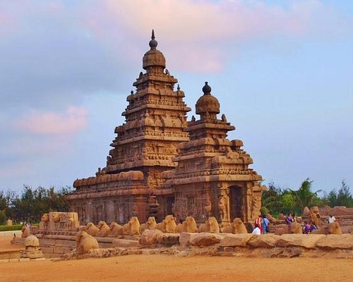
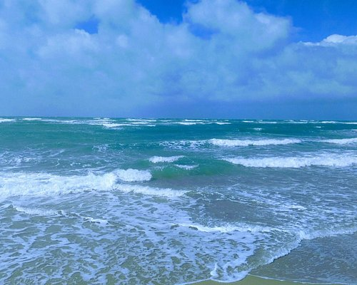
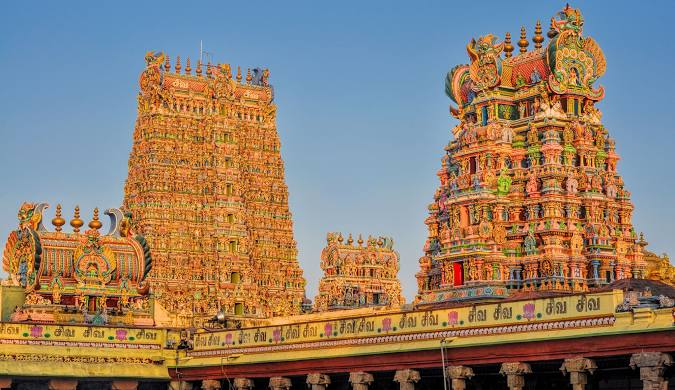
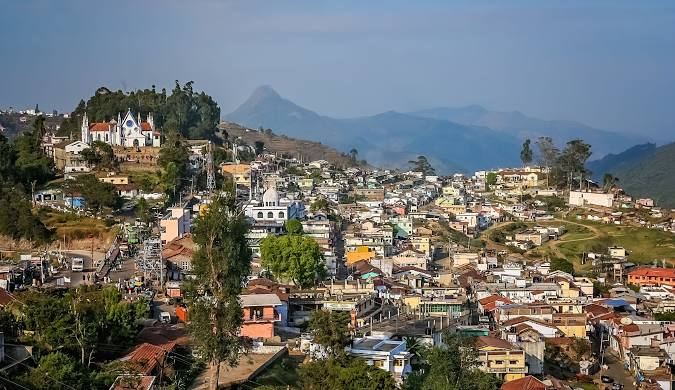

Marina Beach, located in Chennai, Tamil Nadu, is India's longest urban beach and a prominent landmark along the Bay of Bengal. Spanning approximately 13 kilometers (8 miles), Marina Beach is renowned for its expansive sandy shores, gentle waves, and vibrant atmosphere. It serves as a popular recreational spot for locals and tourists alike, offering opportunities for leisurely walks, beach sports, and cultural activities. The beach is lined with numerous stalls selling local snacks and handicrafts, bustling with activity throughout the day. Sunset views over the sea and the iconic Madras Lighthouse add to Marina Beach's allure, making it a must-visit destination in Chennai. (MARINA BEACH)

MAHABALIPURAM
Mahabalipuram, also known as Mamallapuram, is a historic town on the Coromandel Coast of Tamil Nadu, India, renowned for its UNESCO World Heritage Sites and ancient rock-cut temples. The town boasts exquisite stone carvings, intricately sculpted temples, and monolithic rock-cut sculptures dating back to the 7th and 8th centuries. The Shore Temple, a prominent landmark, stands on the water's edge overlooking the Bay of Bengal, showcasing Dravidian architecture and intricate carvings of gods and goddesses. Arjuna's Penance, a massive rock relief, and the Five Rathas, monolithic rock temples shaped like chariots, are other notable attractions that highlight Mahabalipuram's rich cultural and architectural heritage.

DHANUSHKODI
Dhanushkodi, located at the southeastern tip of Pamban Island in Tamil Nadu, India, is a place steeped in both natural beauty and tragic history. It is known for its pristine beaches, clear blue waters, and spectacular views of the Indian Ocean meeting the Bay of Bengal. Once a thriving town, Dhanushkodi was devastated by a cyclone in 1964, leaving it largely abandoned and earning it the moniker "Ghost Town." Ruins of railway lines, schools, and homes submerged in sand dunes tell a poignant tale of the town's past. Today, Dhanushkodi attracts visitors for its eerie yet captivating atmosphere, offering a glimpse into its tragic history amidst stunning coastal scenery.(DHANUSHKODI).

Meenakshi Amman Temple
The Meenakshi Amman Temple, located in Madurai, Tamil Nadu, is a renowned Hindu temple dedicated to Goddess Meenakshi, an incarnation of Parvati, and her consort Lord Sundareswarar, an incarnation of Shiva. This magnificent temple complex is known for its awe-inspiring architecture, with its towering gopurams (gateway towers) adorned with intricate sculptures depicting mythological stories and deities. The temple's main sanctum houses the idol of Goddess Meenakshi adorned with jewels and surrounded by devotees. The Meenakshi Amman Temple is not only a religious pilgrimage site but also a cultural.

Kodaikanal
Kodaikanal, situated in the Palani Hills of Tamil Nadu, India, is a serene hill station known for its pleasant climate, scenic beauty, and peaceful atmosphere. At an altitude of approximately 2,133 meters (7,000 feet), Kodaikanal boasts lush green valleys, wooded slopes, and enchanting waterfalls such as Silver Cascade and Bear Shola Falls. The star-shaped Kodaikanal Lake offers boating opportunities amidst serene surroundings. Visitors can explore attractions like Coaker's Walk for panoramic views, Bryant Park's botanical gardens, and the historic Kurinji Andavar Temple. With its misty hills, eucalyptus forests, and charming cottages, Kodaikanal remains a popular destination for nature lovers s.
Ooty
Ooty, nestled in the Nilgiri Hills of Tamil Nadu, India, is a charming hill station renowned for its cool climate, scenic beauty, and colonial-era charm. At an altitude of 2,240 meters (7,350 feet), Ooty offers lush tea gardens, dense forests, and picturesque landscapes that attract tourists seeking a refreshing escape. Highlights include the UNESCO World Heritage Nilgiri Mountain Railway, Botanical Gardens with exotic plants, Doddabetta Peak for panoramic views, and Ooty Lake for boating. The town also features colonial architecture and offers opportunities to shop for local handicrafts and savor traditional South Indian cuisine, making it a delightful destination year-round.